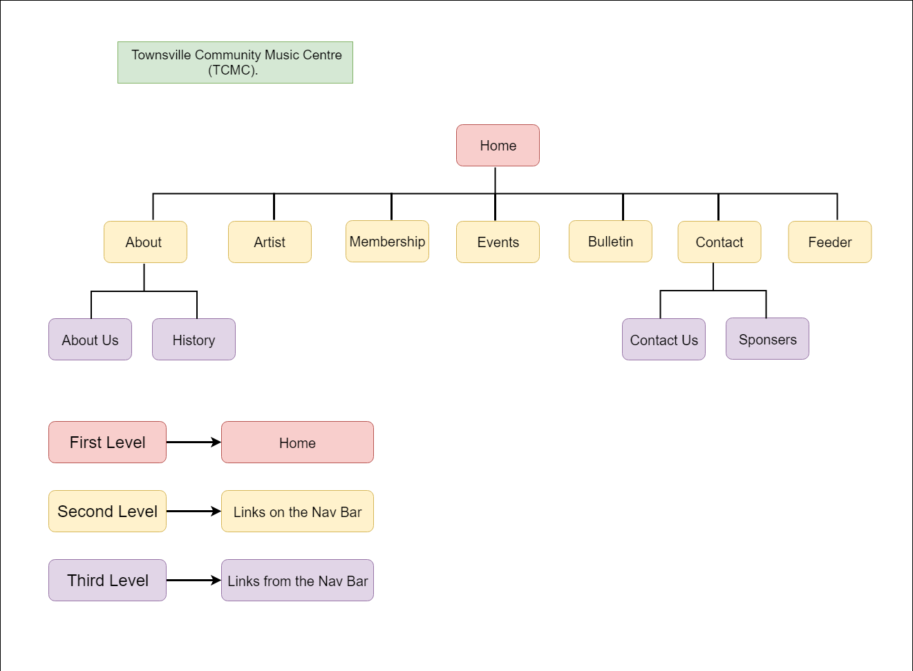

Name: Namgay Dorji ...
Login: 13537435 ...
To improve the business, increase/recruit new members and to increase engagement of members in activities, like volunteering for administration, organising and promoting concerts and workshops.
To inncrease over all sales especially to general public and to facilitate more online plateform users, make online regesteration for membership and also the site is designed for easiness to communicate and navigate for updated informations and encourage the performers to participate and coporate in promotion.
The success of this web project can be :
1. Increment in new members
2. Increment in ticket sales
3. Increments in general public audiences.
The focus on gathering of people for this site are particularly, a very wide range of styles and genres which would otherwise have little exposure, therefore our target audience includes a wide range of ages and tastes in the musics like classical, jazz,ethnic music, etc.
The web composition contains a simple form for membership registeration and updated upcoming events. This will pull them to register through cell phones,tabs, desktops,etc.
Home: It will contain the insights about theTownsville Community Music Centre (TCMC). The sponsers and a link to the facebook page.
About: It will give a description about our organization and also a drop down menus like history and about us page.
Artist: It will give a short information and a small image of the atrists and clicking on an artist will load another page to display more detail and a larger image description about the regestered artists.
Membership: It will allow people to register and be a new member of Townsville Community Music Centre (TCMC)
Events: It will display all the events in sorted order (soonest first) and the registered artists links to the artist page.
Bulletin Board: It will notify about each new noticethe expiry date and also will have an external link.
Feeder: It will capture the users looking for something related to music and feed them back into the site.
Contact: This page has informations about contact us details and sponsor details. It will help members to easily communicate with us.
...